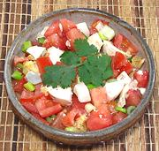

|
Tomato & Salted Egg SaladPhilippine - Kamatis at Itlog na Maalat | ||||
| Serves: Effort: Sched: DoAhead: |
4 side ** 15 min Yes |
An interesting, refreshing and mildly salty salad much enjoyed in the Philippines. Of course it is served to accompany other dishes, not as a salad course (Philippine meals are all one course). | |||
|
3 1-1/4 3 1/4 1-1/2 |
# t T |
Salted Eggs (1) Tomatoes, ripe Scallions Pepper, black Lime Juice (2) |
This salad will not suffer from being made a day ahead and refrigerated. Make - (15 min)
|